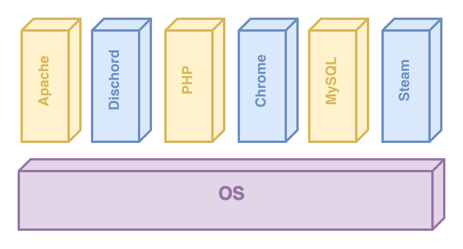
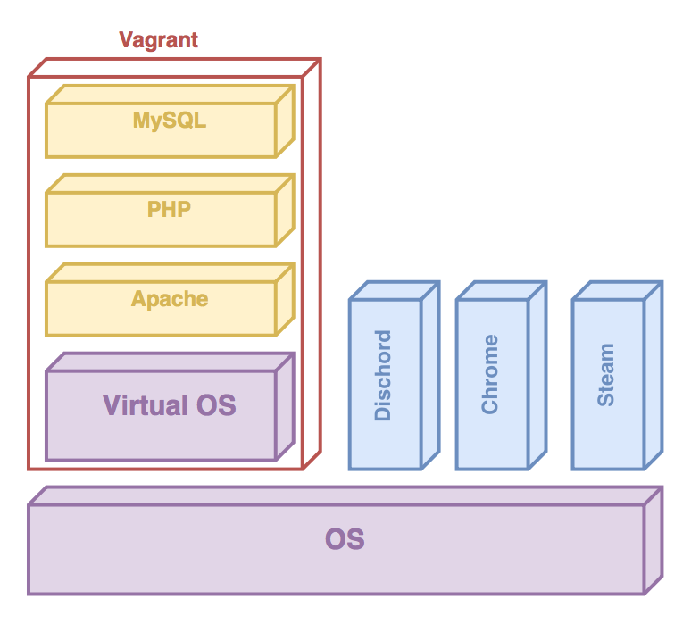
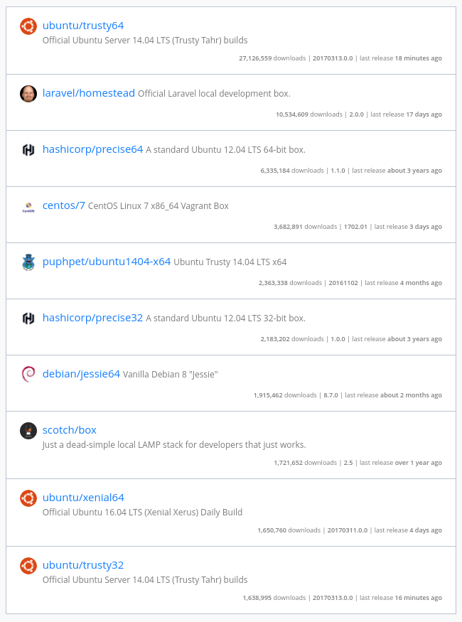

Vagrant
- Command line tool
- Beheren van virtuele machines met
- Integratie met configuratie mgmnt software
- Voorziet baseboxes

Waarom Vagrant?
- Draagbare omgevingen
- Dupliceren van omgevingen
- Beheersbaarheid
- Resistente servers
- Chaos Monkey
- Phoenix Server
- Immutable servers
- Kostperspectief
Code As Infrastructure
LAMP Opstelling
LAMP Installer

Gemanaged met Vagrant

Commandline
vagrant init ubuntu/xenial64 --minimal
# initialiseer een Vagrantfile met als basebox ubuntu 16.10
# de minimal tag zorgt er voor dat er geen commentaar in de
# in de Vagrant file staat
vagrant up
# start de virtuele omgeving gedefineerd in de vagrant file
vagrant halt
# stopt de virtuele omgeving
vagrant suspend
# slaagt de state van de machine up (hibernate)
Commandline
vagrant status
# status van de omgeving.
vagrant reload
# vagrant halt + up
vagrant destroy
# vernietig de virtuele omgeving
vagrant ssh
# zet een ssh verbinding op met de virtuele omgeving
Vagrant file
- Configuratiebestand
- Beschrijving van onze omgeving
- Gebaseerd op een basebox
Vagrant.configure("2") do |config|
config.vm.box = "ubuntu/xenial64"
end
Full Vagrantfile
# -*- mode: ruby -*-
# vi: set ft=ruby :
# All Vagrant configuration is done below. The "2" in Vagrant.configure
# configures the configuration version (we support older styles for
# backwards compatibility). Please don't change it unless you know what
# you're doing.
Vagrant.configure("2") do |config|
# The most common configuration options are documented and commented below.
# For a complete reference, please see the online documentation at
# https://docs.vagrantup.com.
# Every Vagrant development environment requires a box. You can search for
# boxes at https://atlas.hashicorp.com/search.
config.vm.box = "ubuntu/xenial64"
# Disable automatic box update checking. If you disable this, then
# boxes will only be checked for updates when the user runs
# `vagrant box outdated`. This is not recommended.
# config.vm.box_check_update = false
# Create a forwarded port mapping which allows access to a specific port
# within the machine from a port on the host machine. In the example below,
# accessing "localhost:8080" will access port 80 on the guest machine.
# config.vm.network "forwarded_port", guest: 80, host: 8080
# Create a private network, which allows host-only access to the machine
# using a specific IP.
# config.vm.network "private_network", ip: "192.168.33.10"
# Create a public network, which generally matched to bridged network.
# Bridged networks make the machine appear as another physical device on
# your network.
# config.vm.network "public_network"
# Share an additional folder to the guest VM. The first argument is
# the path on the host to the actual folder. The second argument is
# the path on the guest to mount the folder. And the optional third
# argument is a set of non-required options.
# config.vm.synced_folder "../data", "/vagrant_data"
# Provider-specific configuration so you can fine-tune various
# backing providers for Vagrant. These expose provider-specific options.
# Example for VirtualBox:
#
# config.vm.provider "virtualbox" do |vb|
# # Display the VirtualBox GUI when booting the machine
# vb.gui = true
#
# # Customize the amount of memory on the VM:
# vb.memory = "1024"
# end
#
# View the documentation for the provider you are using for more
# information on available options.
# Define a Vagrant Push strategy for pushing to Atlas. Other push strategies
# such as FTP and Heroku are also available. See the documentation at
# https://docs.vagrantup.com/v2/push/atlas.html for more information.
# config.push.define "atlas" do |push|
# push.app = "YOUR_ATLAS_USERNAME/YOUR_APPLICATION_NAME"
# end
# Enable provisioning with a shell script. Additional provisioners such as
# Puppet, Chef, Ansible, Salt, and Docker are also available. Please see the
# documentation for more information about their specific syntax and use.
# config.vm.provision "shell", inline: <<-SHELL
# apt-get update
# apt-get install -y apache2
# SHELL
end
>>
Baseboxes
- Box = Een computersysteem
- Een voorgedefineerd systeem
- Niet gelimiteerd tot OS
- https://atlas.hashicorp.com/boxes/
- Startpunt ontwikkeling eigen systeem
- Een kopie van de basebox word lokaal opgeslagen
~/.vagrant.d/boxes/

Vagrant Machine Starten
- Starten van uit een project folder
- Herhaling: je werkt vanuit een directory met commando's! Hou rekening met een relatieve of absolute path namen
mkdir my_env
cd my_env
Initialiseren van Vagrantfile
vagrant init ubuntu/xenial64 --minimal
Starten van de omgeving
vagrant up
Vagrant Up
vagrant up
Bringing machine 'default' up with 'virtualbox' provider...
==> default: Importing base box 'ubuntu/xenial64'...
==> default: Matching MAC address for NAT networking...
==> default: Checking if box 'ubuntu/xenial64' is up to date...
==> default: A newer version of the box 'ubuntu/xenial64' is available! You currently
==> default: have version '20170209.0.0'. The latest is version '20170311.0.0'. Run
==> default: `vagrant box update` to update.
==> default: Setting the name of the VM: tmp_default_1489617850343_2040
==> default: Clearing any previously set network interfaces...
==> default: Preparing network interfaces based on configuration...
default: Adapter 1: nat
==> default: Forwarding ports...
default: 22 (guest) => 2222 (host) (adapter 1)
==> default: Running 'pre-boot' VM customizations...
==> default: Booting VM...
==> default: Waiting for machine to boot. This may take a few minutes...
default: SSH address: 127.0.0.1:2222
default: SSH username: ubuntu
default: SSH auth method: password
default:
default: Inserting generated public key within guest...
default: Removing insecure key from the guest if it's present...
default: Key inserted! Disconnecting and reconnecting using new SSH key...
==> default: Machine booted and ready!
==> default: Checking for guest additions in VM...
default: The guest additions on this VM do not match the installed version of
default: VirtualBox! In most cases this is fine, but in rare cases it can
default: prevent things such as shared folders from working properly. If you see
default: shared folder errors, please make sure the guest additions within the
default: virtual machine match the version of VirtualBox you have installed on
default: your host and reload your VM.
default:
default: Guest Additions Version: 5.0.32
default: VirtualBox Version: 5.1
==> default: Mounting shared folders...
default: /vagrant => /home/luytsm/tmp
Done!
vagrant status
Current machine states:
default running (virtualbox)
The VM is running. To stop this VM, you can run `vagrant halt` to
shut it down forcefully, or you can run `vagrant suspend` to simply
suspend the virtual machine. In either case, to restart it again,
simply run `vagrant up`.
Verbinden met de box
vagrant ssh
Shared Folder
- Baseboxes zijn automatisch geconfigureerd met een shared folder
- De folder op de host is de folder waarin de Vagrantfile staat
/home/luytsm/my_env
├── some_other_config_file
├── ubuntu-xenial-16.04-cloudimg-console.log
└── Vagrantfile
Op de virtuele machine is de folder:
/vagrant/
├── some_other_config_file
├── ubuntu-xenial-16.04-cloudimg-console.log
└── Vagrantfile
Eenvoudige manier om het delen van bestanden tussen de host en guest
Netwerk Configuratie
- Port Forwarding
- Default Network Interface
- Public Networks
- Private Networks
Port Forwarding
- Toegang van van de host naar Guest
- Host is de omgeving waarop je virtualisatie draait.
- Guest is de gevirtualiseerde omgeving
Vagrant.configure("2") do |config|
config.vm.network "forwarded_port", guest: 80, host: 8080
end
Dit zorgt ervoor dat je makkelijk vanuit je eigen omgeving aan je webapplicatie kan
Public Network
- Default geconfigureerde interface
- vagrant ssh maakt hier gebruik van
- Brigged Network m/ VBox
- DHCP
Vagrant.configure("2") do |config|
config.vm.network "public_network"
end
Static IP
Vagrant.configure("2") do |config|
config.vm.network "public_network", ip: "192.168.0.17"
end
Private Network
- Internal Network m/ VBox
- DHCP
Vagrant.configure("2") do |config|
config.vm.network "private_network", type: "dhcp"
end
Static IP
Vagrant.configure("2") do |config|
config.vm.network "private_network", ip: "192.168.50.4"
end
Provider
Provider is de virtualisatie software waar rond Vagrant zich wrapt.
Provisioning
Provisioning is het proces dat Vagrant gebruikt voor het configureren van de omgeving naar de gewenste staat
Provisioning
- Shell
- Ansible
- Docker
- Chef
- Puppet
- Salt
- ...
Wanneer runt de provisioning?
Shell Provisioning
#!/usr/bin/env bash
# bootstrap.sh
# basic installation script
apt-get update
apt-get install -y nginx git
Vagrant.configure("2") do |config|
config.vm.box = "ubuntu/xenial64"
config.vm.provision :shell, path: "bootstrap.sh"
end
Nadelen van Shell Provisioning
- Niet flexibel
- Geen user interactie mogelijk
- Niet schaalbaar
- lange bash scripts zijn altijd leuk om te lezen
- Geen idempotentie gegarandeerd
- Opnieuw provisionen van een box duurt lang
vagrant destroy
vagrant up
Idempotent
denoting an element of a set which is unchanged in value when multiplied or otherwise operated on by itself.
Voorbeelden
mkdir -r folder
# wat als de folder al bestaat
[ ! -f folder ] && rm -r folder
# eerst check uitvoeren
git clone myrepo.git
# wat als de repo al gecloond is
[ ! -f my repo ] && git clone myrepo.git
# eerst check uitvoeren
Putting it together
- Gegeven is volgende project folder:
basic
├── bootstrap_dev.sh
├── bootstrap_prod.sh
├── bootstrap_uat.sh
├── index_dev.html
├── index_prod.html
├── index_uat.html
└── Vagrantfile
Putting it together
Vagrantfile
Vagrant.configure("2") do |config|
config.vm.box = "ubuntu/xenial64"
config.vm.define "dev" do |dev|
dev.vm.hostname = "dev.site"
dev.vm.network :private_network, ip: "192.168.16.10"
dev.vm.network :forwarded_port, guest: 22, host: 2222, id: "ssh", disabled: true
dev.vm.network :forwarded_port, guest: 22, host: 4444, auto_correct: true
dev.vm.network :forwarded_port, guest: 80, host: 8010, auto_correct: true
dev.vm.provision "shell", path: "bootstrap_dev.sh"
end
config.vm.define "uat" do |uat|
uat.vm.hostname = "uat.site"
uat.vm.network :private_network, ip: "192.168.16.11"
uat.vm.network :forwarded_port, guest: 22, host: 2222, id: "ssh", disabled: true
uat.vm.network :forwarded_port, guest: 22, host: 5555, auto_correct: true
uat.vm.network :forwarded_port, guest: 80, host: 8011, auto_correct: true
uat.vm.provision "shell", path: "bootstrap_uat.sh"
end
config.vm.define "prod" do |prod|
prod.vm.hostname = "prod.site"
prod.vm.network :private_network, ip: "192.168.16.12"
prod.vm.network :forwarded_port, guest: 22, host: 2222, id: "ssh", disabled: true
prod.vm.network :forwarded_port, guest: 22, host: 6666, auto_correct: true
prod.vm.network :forwarded_port, guest: 80, host: 8012, auto_correct: true
prod.vm.provision "shell", path: "bootstrap_prod.sh"
end
end
Putting it together
#!/bin/bash
apt-get update
apt-get install -y nginx git
rm /var/www/html/*
cp /vagrant/index_uat.html /var/www/html/index.html
Putting it together
Verbinden met de machines
vagrant ssh dev
vagrant ssh uat
vagrant ssh prod